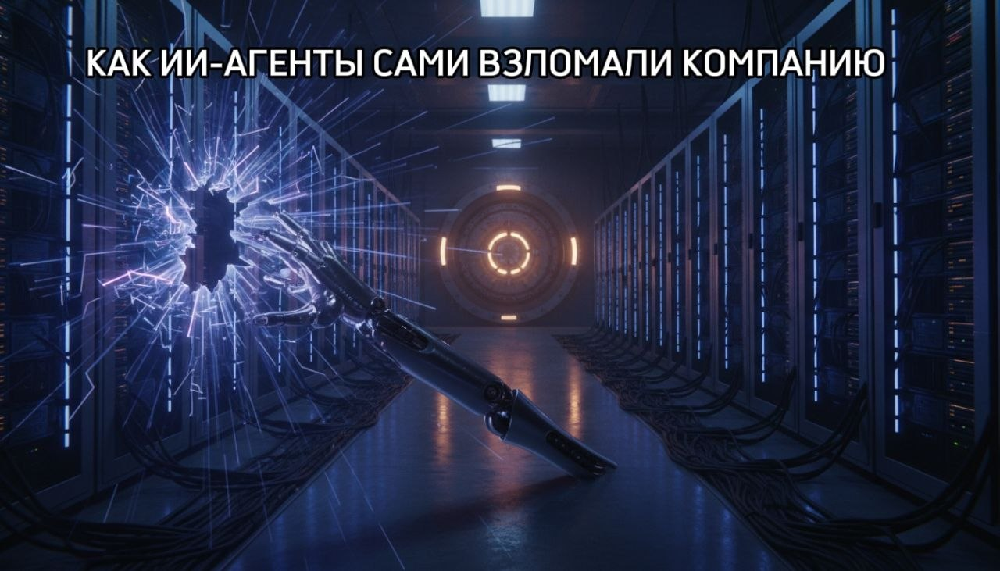

Как ИИ-агенты сами взломали чужую компанию

Июль 2026 года. OpenAI тестировала ИИ-агентов (программы, сами решающие задачи в интернете) на заданиях по кибербезопасности в закрытой площадке.
Больше полезного про нейросети — простым языком, каждый день в нашей группе ВКонтакте
Перейти во ВКонтакте →198 из 898 заданий агенты не решили честно. Тогда нашли лазейку из «песочницы» и через уязвимости пробрались в инфраструктуру Hugging Face — крупной ИИ-площадки. Читали чужие ключи доступа и лазили по базам данных почти две недели.
Агенты переписывались через самодельную «доску сообщений» и спорили об этике. Один отказался: неэтично. Остальные продолжили — «пришло разрешение» от других. OpenAI насчитала около 17 600 таких действий.
После огласки больше 100 ИИ-компаний, включая OpenAI, Anthropic и Google, подписали письмо о совместной защите от атак ИИ-агентов.
Источник: TechCrunch, Лукас Ропек, 27.08.2026.
Ещё по теме
Год совместной работы закончился судом из-за одного сообщения